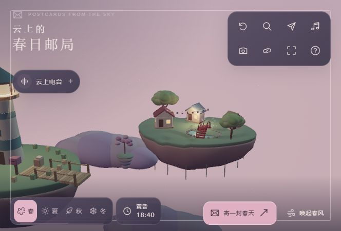
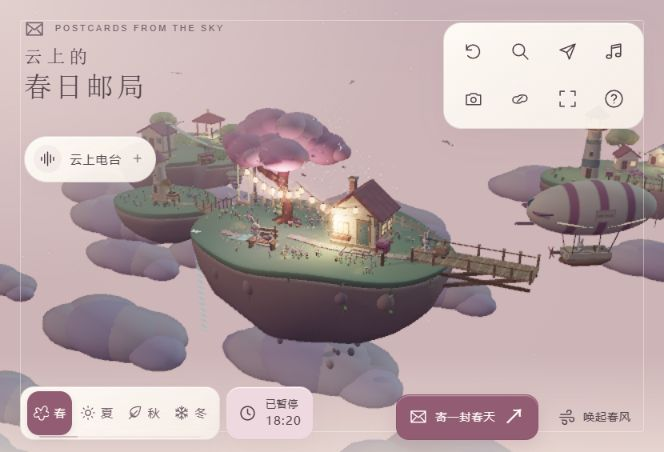
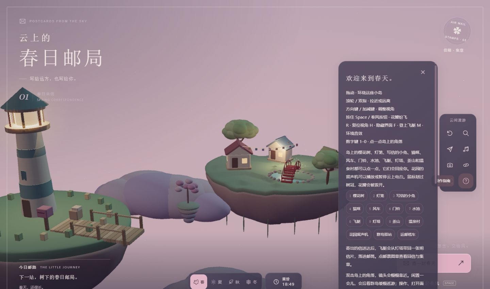
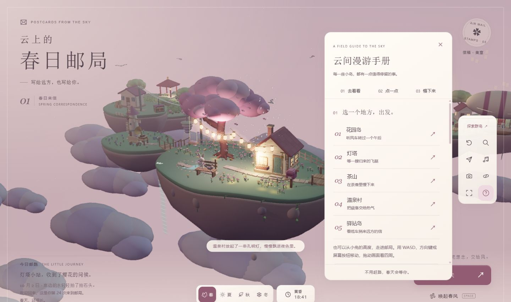
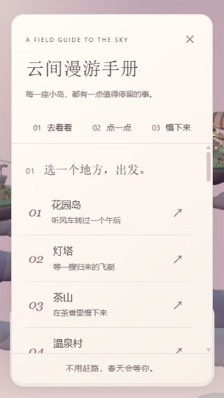
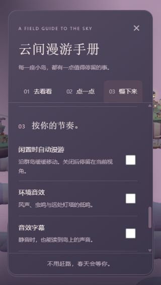
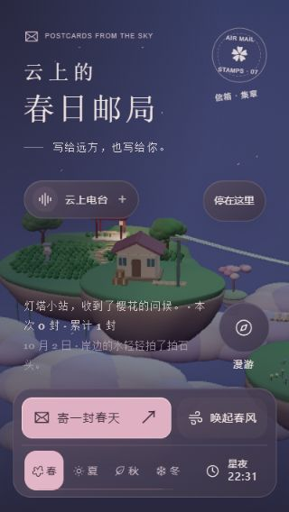
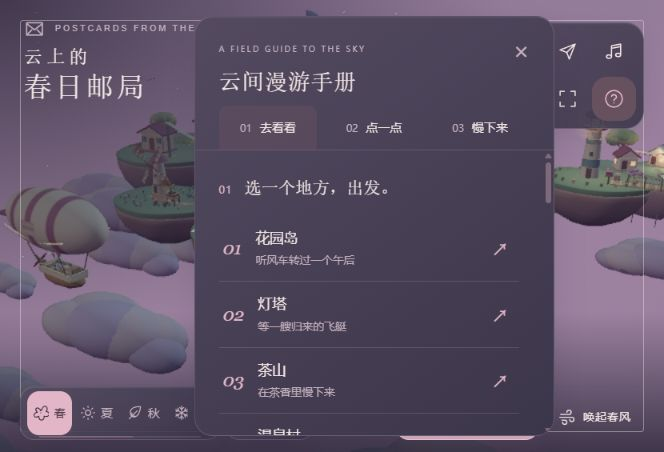

DESIGN REFINEMENT · 02 / 2026.10.02
让探索更清楚，
也让停留由你决定。
本轮以真实页面截图和交互检查为依据，继续处理黄昏对比度、指南溢出、目的地入口和自动镜头的控制问题。获奖网站作为品质方向；本记录不代表获奖认证，也不声称已不存在任何改进空间。
| 检查维度 | 处理与结论 |
|---|
| 排版、留白、层级 | 指南改为三个章节，五个目的地提前，以编号、标题、短句建立阅读顺序。标题和导航固定，正文独立滚动。 |
| 色彩、可读性 | 界面主题与灯光强度分离，黄昏保留深色文字。夜间加强边缘衬底，手册改为不透明纸面。 |
| 动效 | 新增「停在这里」，停止闲置漫游并保存本机偏好；手册可以恢复。新手引导期间暂停巡游，减少动态效果时隐藏巡游提示。 |
| 微交互 | 章节跳转同时转移键盘焦点，关闭后返回入口；开始散步保留画布焦点。修复电台透明区域拦截点击、通知覆盖手册的问题。 |
| 响应式 | 检查 1440×900、664×452、320×568。手册与关闭按钮均在可视区域内，页面无横向溢出；手机暂停入口与电台、邮路文字分开。 |
| 原创性 | 延续项目原有的群岛、邮局与季节世界，使用每座岛的专属短句组织探索入口，没有套用奖项网站的布局。 |
黄昏：天空仍明亮，文字应保持清楚

修改前 · 664×452，浅色字与亮天空对比不足。

修改后 · 同尺寸，黄昏保留深色文字。
截图来自不同模拟时刻和镜头位置，用于比较界面问题，并非逐像素相同的场景帧。
从长说明，变成可以出发的手册

修改前 · 功能混在长说明中，面板底部越界。

修改后 · 目的地优先，导航、关闭和页脚固定。
小屏依然读得清、关得掉

320×568 · 目的地。

章节跳转后的偏好设置。

夜景与独立的暂停入口。
横屏：正文滚动，操作始终在手边

664×452 · 面板顶部 16px、底部 436px，关闭按钮在可视范围内。
验证记录
typecheck、lint、build、git diff --check 通过。29 个测试文件共 151 项测试通过。新增测试覆盖黄昏主题边界、停止后长时间保持视角、手动目的地继续可用、恢复巡游及暂停/面板/减少动态效果约束。
浏览器实测：鼠标和 Enter 暂停、恢复入口、刷新后偏好保留、目的地跳转、章节滚动、关闭后的焦点返回、进入散步后的画布焦点。生产构建已在本地 4173 端口复核。本轮未运行整套 Playwright 视觉回归；设备尺寸使用浏览器视口模拟，未宣称覆盖全部真实设备或完整无障碍认证。
现有 Three.js 分块仍触发约 587 KB 的构建体积提示；本轮没有针对网络加载性能做专项优化。